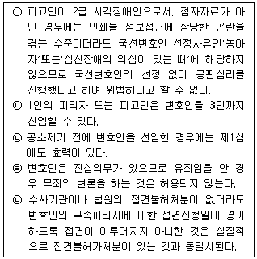
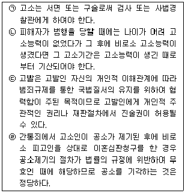
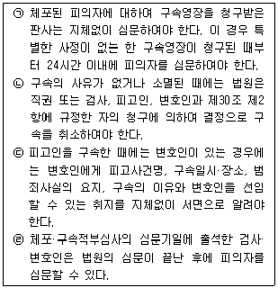
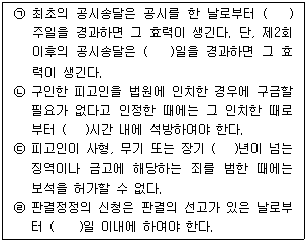

경찰공무원(순경)-형사소송법 (2015-02-14 기출문제)
1. 형사소송법에 관한 설명으로 가장 적절하지 않은 것은? (다툼이 있으면 판례에 의함)
- 포괄일죄의 공소시효는 최종의 범죄행위가 종료한 때로부터 진행한다.
- 기피신청 사유로서 법관이 불공평한 재판을 할 염려가 있는 때라 함은 당사자가 불공평한 재판이 될지도 모른다고 추측할 만한 주관적인 사정이 있는 때를 말한다.
- 공판기일의 효율적이고 집중적인 심리를 준비하기 위하여 마련한 공판준비절차에서는 쟁점정리, 증거정리, 증거개시 및 심리계획을 할 수 있다.
- 피의자의 진술은 영상녹화하여 검사작성의 피의자신문조서의 진정성립을 인정하는 용도로 사용할 수 있고, 이 경우 피의자에게 영상녹화사실을 알려주면 족하며 동의를 받을 필요는 없다.
(정답률: 24%)

2. 형사소송법상 제척･기피･회피에 관한 다음 설명 중 가장 적절한 것은? (다툼이 있으면 판례에 의함)
- 법관이 해당 사건의 직접피해자인 경우뿐만 아니라 간접피해자인 경우에도 제척사유에 해당되어 그 사건을 심판하는 법관이 될 수 없다.
- 회피제도는 법관에게 제척사유가 있음에도 불구하고 재판에 관여하거나 기타 불공평한 재판을 할 사정이 있는 경우에 당사자의 신청에 의하여 그 법관을 직무집행으로부터 탈퇴하게 하는 제도를 말한다.
- 통역인이 피해자의 사실혼 배우자라면 통역인에게 제척사유가 있다.
- 재판부가 당사자의 증거신청을 채택하지 아니하거나 이미 한 증거결정을 취소하였다 하더라도 그러한 사유만으로는 재판의 공평을 기대하기 어려운 객관적인 사정이 있다고 할 수 없다.
(정답률: 24%)
3. 진술거부권에 관한 헌법재판소의 결정내용으로 가장 적절하지 않은 것은? (다툼이 있으면 판례에 의함)
- 주취운전의 혐의자에게 호흡측정기에 의한 주취여부의 측정에 응할 것을 요구하고 이에 불응할 경우 처벌한다면 이는 형사상 불리한 진술을 강요하는 것에 해당한다고 할 수 있으므로 헌법 제12조 제2항의 진술거부권조항에 위배된다.
- 헌법은 형사책임에 관하여 자기에게 불이익한 진술을 강요당하지 아니할 것을 국민의 기본권으로 보장하고 있으며, 진술거부권은 고문 등 폭행에 의한 강요는 물론 법률로서도 진술을 강제할 수 없음을 의미한다.
- 헌법이 진술거부권을 국민의 기본적 권리로 보장하는 것은 피고인 또는 피의자의 인권을 형사소송의 목적인 실체적 진실발견이나 사회정의의 실현이라는 국가이익보다 우선적으로 보호함으로써 인간의 존엄성과 생존가치를 보장하고, 나아가 비인간적인 자백의 강요와 고문을 근절하려는데 있다.
- 진술거부권은 현재 피의자나 피고인으로서 수사 또는 공판절차에 계속 중인 자 뿐만 아니라 장차 피의자나 피고인이 될 가능성이 있는 자에게도 보장되며, 형사절차에서만 보장되는 것은 아니고 행정절차이거나 국회에서의 질문 등에서도 보장된다.
(정답률: 87%)
4. 변호인에 관한 다음 설명 중 옳은 것은 모두 몇 개인가? (다툼이 있으면 판례에 의함)

- 1개
- 2개
- 3개
- 4개
(정답률: 30%)
5. 고소 및 고발에 관한 설명으로 옳은 것은 모두 몇 개인가? (다툼이 있으면 판례에 의함)

- 1개
- 2개
- 3개
- 4개
(정답률: 78%)
6. 반의사불벌죄에 관한 다음 설명 중 가장 적절하지 않은 것은? (다툼이 있으면 판례에 의함)
- 항소심에 이르러 비로소 반의사불벌죄가 아닌 죄에서 반의사불벌죄로 공소장이 변경된 경우 그 처벌을 희망하는 의사표시를 철회할 수 있다.
- 반의사불벌죄에 있어서 처벌을 희망하는 의사표시의 철회는 철회한 상대방에게만 그 효력이 미친다.
- 반의사불벌죄에 있어서 피해자의 피고인 또는 피의자에 대한 처벌을 희망하지 않는다는 의사표시 또는 처벌을 희망하는 의사표시의 철회는 형사소송절차에 있어서의 소송능력에 관한 일반원칙에 따라 의사능력이 있는 미성년자인 피해자가 단독으로 이를 할 수 있고, 거기에 법정대리인의 동의가 있어야 한다거나 법정대리인에 의해 대리되어야만 한다고 볼 것은 아니다.
- 반의사불벌죄에 있어서 처벌불원의 의사표시의 부존재는 법원이 직권으로 조사·판단하여야 한다.
(정답률: 82%)
7. 형사소송절차상 피의자를 보호하기 위한 제도에 관한 설명으로 가장 적절하지 않은 것은?
- 체포·구속적부심사의 청구를 받은 법원은 청구서가 접수된 때부터 48시간 이내에 체포 또는 구속된 피의자를 심문하고 수사관계서류와 증거물을 조사하여야 한다.
- 미체포된 피의자에 대하여 구속영장을 청구받은 판사는 피의자가 죄를 범하였다고 의심할 만한 이유가 있는 경우에 피의자가 도망하는 등의 사유로 심문할 수 없는 경우 외에는 피의자를 구인한 후 심문하여야 한다.
- 체포·구속적부심사에 관한 법원의 결정에 대하여는 기각결정과 석방결정을 불문하고 항고가 허용되지 않는다.
- 보증금납입조건부 피의자석방제도는 체포된 피의자가 아니라 구속된 피의자의 보석청구로 보증금의 납입을 조건으로 석방하는 제도이다.
(정답률: 70%)
8. 형사소송법상 체포·구속에 관한 설명으로 옳은 것은 모두 몇 개인가?

- 0개
- 1개
- 2개
- 3개
(정답률: 68%)
9. 압수ㆍ수색ㆍ검증에 관한 형사소송법의 내용으로 가장 적절하지 않은 것은?
- 검사 또는 사법경찰관은 현행범인을 체포하는 경우 필요한 때에는 영장 없이 체포현장에서의 압수, 수색, 검증을 할 수 있다.
- 범행 중 또는 범행직후의 범죄장소에서 긴급을 요하여 법원판사의 영장을 받을 수 없는 때에는 영장 없이 압수, 수색 또는 검증을 할 수 있다.
- 검사 또는 사법경찰관은 긴급체포된 자가 소유·소지 또는 보관하는 물건에 대하여 긴급히 압수할 필요가 있는 경우에는 체포한 때부터 48시간 이내에 한하여 영장 없이 압수·수색 또는 검증을 할 수 있다.
- 검사, 사법경찰관은 피의자 기타인의 유류한 물건이나 소유자, 소지자 또는 보관자가 임의로 제출한 물건을 영장 없이 압수할 수 있다.
(정답률: 87%)
10. 디지털 정보 저장매체의 압수 및 증거사용에 관한 다음 설명 중 가장 적절하지 않은 것은? (다툼이 있으면 판례에 의함)
- 압수물인 디지털 저장매체로부터 출력한 문건을 증거로 사용하기 위해서는 정보저장매체 원본에 저장된 내용과 출력한 문건의 동일성이 인정되어야 하고, 이를 위해서는 디지털 저장매체원본이 압수 시부터 문건 출력 시까지 변경되지 않았음이 담보되어야 한다.
- 컴퓨터용디스크에 기억된 문자정보를 증거자료로 하는 경우에는 읽을 수 있도록 출력하여 인증한 등본을 낼 수 있다.
- 컴퓨터디스크 등에 기억된 문자정보를 증거로 하는 경우에 증거조사를 신청한 당사자는 법원이 명하거나 상대방이 요구한 때에는 컴퓨터디스크 등에 입력한 사람과 입력한 일시, 출력한 사람과 출력한 일시를 밝혀야 한다.
- 전자정보에 대한 압수·수색영장을 집행할 때에는 원칙적으로 저장매체 자체를 수사기관 사무실 등으로 옮겨 혐의사실과 관련된 부분만을 문서로 출력하거나 해당 파일을 복사하는 방식으로 이루어져야 한다.
(정답률: 79%)
11. 공소제기의 효과에 관한 다음 설명 중 가장 적절하지 않은 것은? (다툼이 있으면 판례에 의함)
- 공소제기에 의해 사건은 법원에 계속되고, 공소시효의 진행이 정지되며 법원은 검사가 공소제기한 사건에 한하여 심판하여야 한다.
- 공소가 제기되면 동일사건에 대해 다시 공소를 제기할 수 없으므로 동일사건이 수개의 법원에 계속된 때에는 공소기각의 판결을 해야 한다.
- 공소제기 후에 진범이 발견되어도 공소제기의 효력은 진범에게 미치지 아니한다.
- 공범의 1인에 대한 공소제기가 있어도 다른 공범자에 대하여는 그 효력이 미치지 않지만, 공범의 1인에 대한 공소시효 정지의 효과는 다른 공범자에 대하여도 그 효력이 미친다.
(정답률: 20%)
12. 공소시효에 관한 다음 설명 중 가장 적절하지 않은 것은? (다툼이 있으면 판례에 의함)
- 공소시효의 결정기준은 2개 이상의 형을 병과할 범죄에는 중한 형이고, 형법에 의하여 형을 가중할 경우에는 가중한 형이다.
- 범죄 후 법률의 개정에 의하여 법정형이 가벼워진 경우에는 형법 제1조 제2항에 의하여 당해 범죄사실에 적용될 가벼운 법정형이 공소시효 기간의 기준이 된다.
- 공소제기 후 공소장변경이 이루어진 경우 변경된 범죄사실에 대한 법정형이 공소시효 기간의 기준이 되고, 공소시효의 완성 여부는 당초의 공소제기가 있었던 시점을 기준으로 판단한다.
- 검사의 불기소처분에 대하여 재정신청이 있으면 이에 관한 고등법원의 재정결정이 있을 때까지 공소시효의 진행이 정지되고, 공소제기의 결정이 있는 때에는 공소시효에 관하여 그 결정이 있는 날에 공소가 제기된 것으로 본다.
(정답률: 24%)
13. 공판준비절차에 관한 다음 설명 중 가장 적절하지 않은 것은?
- 공판준비기일에 신청하지 못한 증거라도 공판기일에 법원은 직권으로 증거조사를 할 수 있다.
- 국민참여재판과 달리 통상 공판절차에 있어서 공판준비절차에 부칠 것인지 여부는 재판장의 재량에 속한다.
- 공판준비절차는 주장 및 입증계획 등을 서면으로 준비하게 하거나 공판준비기일을 열어 진행한다.
- 법원은 쟁점 및 증거의 정리를 위하여 필요한 경우라도 제1회 공판기일 후에는 사건을 공판준비절차에 부칠 수 없다.
(정답률: 25%)
14. 제1심이 공소장 부본을 피고인 또는 변호인에게 송달하지 아니한 채 공시송달의 방법으로 피고인을 소환하여 피고인이 공판기일에 출석하지 아니한 가운데 제1심 공판절차가 진행된 경우에 관한 설명이다. 가장 적절하지 않은 것은? (다툼이 있으면 판례에 의함)
- 제1심이 공소장 부본을 피고인 또는 변호인에게 송달하지 아니한 채 공판절차를 진행하였다면 이는 소송절차에 관한 법령을 위반한 경우에 해당한다.
- 피고인이 제1심 법정에서 이의함이 없이 공소사실에 관하여 충분히 진술할 기회를 부여받았다고 하더라도 방어권의 침해로서 판결에 영향을 미친 위법에 해당한다.
- 피고인이 공판기일에 출석하지 아니한 가운데 제1심의 절차가 진행되었다면 위법한 공판절차에서 이루어진 소송행위로서 효력이 없다.
- 항소심은 피고인 또는 변호인에게 공소장 부본을 송달하고 적법한 절차에 의하여 소송행위를 새로이 한 후 항소심에서의 진술과 증거조사 등 심리결과에 기초하여 다시 판결하여야 한다.
(정답률: 27%)
15. 증거신청 및 조사에 관한 다음 설명 중 가장 적절하지 않은 것은?
- 법원은 검사가 신청한 증거나 피고인 또는 변호인이 신청한 증거에 앞서 직권으로 채택한 증거에 대하여 먼저 증거조사를 할 수 있다.
- 당사자는 증거신청에 대한 법원의 결정이 상당하지 아니한 때에는 이의신청을 할 수 있다.
- 법원은 증거신청을 기각하는 경우 증거신청인으로부터 당해 증거서류 또는 증거물을 제출받아서는 아니 된다.
- 법원은 검사, 피고인 또는 변호인이 고의로 증거를 뒤늦게 신청하여 공판의 완결을 지연하는 것으로 인정할 때에는 직권 또는 상대방의 신청에 따라 각하결정을 할 수 있다.
(정답률: 28%)
16. 피해자의 진술권에 관한 설명으로 가장 적절한 것은?
- 형사피해자의 진술권은 헌법과 형사소송법에 명문으로 규정되어 있는 것은 아니다.
- 법원은 범죄로 인한 피해자 또는 그 법정대리인의 신청이 있는 때에는 그 피해자등을 증인으로 신문하여야 한다. 다만, 피해자등 이미 당해 사건에 관하여 공판절차에서 충분히 진술하여 다시 진술할 필요가 없다고 인정되는 경우 또는 피해자등의 진술로 인하여 공판절차가 현저하게 지연될 우려가 있는 경우에는 그러하지 아니하다.
- 피해자의 정보권을 보호하기 위하여 피해자 또는 그 법정대리인의 신청이 있는 때에는 당해 사건의 공소제기 여부 등을 통지하여야 하나, 피해자에게 공판기록 열람·등사권은 인정되지 않는다.
- 피해자의 진술권을 보장하기 위해 필요한 변호인의 도움을 받을 권리나 공판절차와 수사절차에서 신뢰관계자의 동석은 현행법상 인정되지 않는다.
(정답률: 32%)
17. 독수의 과실이론에 관한 설명으로 가장 적절하지 않은 것은? (다툼이 있으면 판례에 의함)
- 독수의 과실이론이란 위법하게 수집된 증거에 의하여 발견된 제2차 증거의 증거능력을 배제하는 이론이다.
- 대법원은 위법수집 증거에 의하여 획득한 2차적 증거도 원칙적으로 유죄 인정의 증거로 삼을 수 있다고 판시한 바 있다.
- 적법절차를 따르지 않고 수집한 증거를 기초로 획득한 2차적 증거라도 1차 증거수집과의 사이에 인과관계의 희석 또는 단절여부를 중심으로 2차적 증거수집과 관련된 모든 사정을 전체적·종합적으로 고려하여 예외적인 경우에는 유죄 인정의 증거로 사용할 수 있다.
- 강도 현행범으로 체포된 피고인이 진술거부권을 고지받지 아니한 채 자백을 하고, 이후 40여일이 지난 후에 변호인의 충분한 조력을 받으면서 공개된 법정에서 임의로 자백한 경우에 법정에서의 피고인의 자백은 증거로 사용할 수 있다.
(정답률: 74%)
18. 자백보강법칙에 관한 다음 설명 중 가장 적절하지 않은 것은? (다툼이 있으면 판례에 의함)
- 피고인이 범행을 자인하는 것을 들었다는 피고인 아닌 자의 진술내용은 피고인의 자백에 대한 보강증거가 될 수 없다.
- 공범인 공동피고인의 진술은 다른 공동피고인의 자백에 대한 보강증거가 될 수 있다.
- 자백에 대한 보강증거는 범죄사실의 전부 또는 중요부분을 인정할 수 있는 정도가 되지 아니하더라도 피고인의 자백이 가공적인 것이 아닌 진실한 것임을 인정할 수 있는 정도만 되면 족할 뿐만 아니라, 직접증거가 아닌 간접증거나 정황증거도 보강증거가 될 수 있다.
- 제1심법원이 증거의 요지에서 피고인의 자백을 뒷받침할 만한 보강증거를 거시하지 않았음에도, 항소심이 적법하게 증거조사를 마쳐 채택한 증거들로 피고인의 자백을 뒷받침하기에 충분한 경우 제1심법원의 판단을 유지한 것은 정당하다.
(정답률: 70%)
19. 재심사유에 관한 다음 설명 중 가장 적절하지 않은 것은? (다툼이 있으면 판례에 의함)
- 형사소송법 제420조 제5호에 정한 무죄 등을 인정할'증거가 새로 발견된 때'란 재심대상이 되는 확정판결의 소송절차에서 발견되지 못하였거나 또는 발견되었다 하더라도 제출할 수 없었던 증거를 새로 발견하였거나 비로소 제출할 수 있게 된 때를 말한다.
- 피고인이 새로운 증거를 발견하였다고 하여 재심을 청구한 경우 재심대상판결의 소송절차 중에 그러한 증거를 제출하지 못한 데 피고인의 과실이 있는 경우에는, 그 증거에 대해서는 신규성이 부인된다.
- 형사소송법 제420조 제7호의 재심사유에 해당하는지 여부를 판단함에 있어'사법경찰관 등이 범한 직무에 관한 죄'가 사건의 실체관계에 관계된 것인지 여부나 당해 사법경찰관이 직접 피의자에 대한 조사를 담당하였는지 여부도 고려해야 한다.
- 형사소송법 제420조 제5호의'형의 면제를 인정할 명백한 증거가 새로 발견될 때'에서'형의 면제'는 형의 필요적 면제만을 의미하고 임의적 면제는 해당하지 않는다.
(정답률: 25%)
20. 다음의 ( )안에 들어갈 숫자의 합은 얼마인가?

- 39
- 48
- 51
- 55
(정답률: 20%)
"기피신청 사유로서 법관이 불공평한 재판을 할 염려가 있는 때라 함은 당사자가 불공평한 재판이 될지도 모른다고 추측할 만한 주관적인 사정이 있는 때를 말한다."는 기피신청 사유에 대한 설명이다. 기피신청은 법관이 공정한 재판을 할 수 없는 경우에 신청할 수 있는 절차이다.
"공판기일의 효율적이고 집중적인 심리를 준비하기 위하여 마련한 공판준비절차에서는 쟁점정리, 증거정리, 증거개시 및 심리계획을 할 수 있다."는 공판준비절차에 대한 설명이다. 공판준비절차는 공판기일에서 효율적이고 집중적인 심리를 위해 준비하는 절차이다.
"피의자의 진술은 영상녹화하여 검사작성의 피의자신문조서의 진정성립을 인정하는 용도로 사용할 수 있고, 이 경우 피의자에게 영상녹화사실을 알려주면 족하며 동의를 받을 필요는 없다."는 피의자 진술에 대한 설명이다. 피의자 진술은 영상녹화하여 사용할 수 있으며, 이 경우 피의자에게 영상녹화사실을 알려주면 된다. 동의를 받을 필요는 없다.